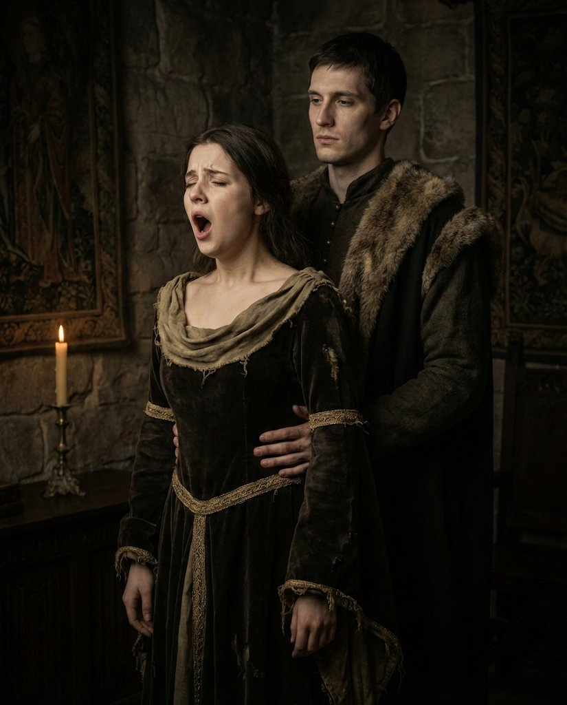

A Medieval Sigh
A woman in a faded gown tilts her head back with her eyes closed while a cold-faced man holds her waist, in dark candlelit tones like a Rembrandt painting. The same prompt was compared across Midjourney and Nano Banana.
| Creator | Nick St. Pierre @nickfloats |
|---|---|
| Platform | X |
| Model | Midjourney v8 (对比 Nano Banana) |
| Likes | 643 |
| Posted | 2026-02-20 |
| Visual style | Cinematic realism |
| Regional vibe | European |
| Genre | Historical / period |
| Mood | Tearjerker |
Prompt · from the post
"A melancholic medieval young woman with a soft, sorrowful gaze, standing in partial profile. Her gown is slightly tattered at the edges, with a loosely draped neckline suggesting past elegance. Her head is tilted upward, yawning dramatically with her eyes closed and mouth open, eyebrows drawn with quiet distress. Behind her, a tall man stands closely, one arm placed around her waist, his expression distant and conflicted a cold, intense stare filled with superiority. The atmosphere is dim and dramatic, with soft chiaroscuro lighting, stone walls fading into shadow behind them, subtle painterly textures, historical illustration style, cinematic framing"